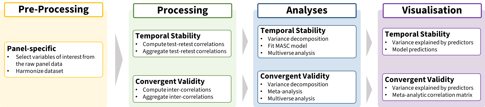

Below are step-by-step instructions on how to use the files in the OSF repository to replicate the analyses described in the manuscript.

| No. | Description | Input | Scripts | Output |
|---|---|---|---|---|
1 |
For each [PANEL], a .xlsx workbook with the information about each risk measure and other relevant variables (e.g., age or year of birth) is compiled by adapting the information from the risk measure codebook and the panel’s codebooks/questionnaires. Separate tabs include information on the different classes of variables (e.g., measures, demographics, id). The merge_var_info.R script reads each sheet/tab from each .xlsx workbook, saves each one as a dataframe and merges the information from all the panels/sample into a list object (panel_var_info.rds). This file contains the information needed for the pre-processing of the raw data. |
var_info/codebook_main.xlsx |
var_info/code/merge_var_info.R |
var_info/panel_variable_info.rds |
2 |
For each [PANEL], an R script reads the panel_var_info.rds file and Raw Panel Data file(s) to select the relevant variables, and creates a .csv file (long format) with the relevant (and if needed, cleaned and re-coded) raw data, as well as a .csv file with the main information on the different risk preference measures that will be included in the analyses (e.g., measure category, domain). Simultaneously, a summary overview of the data is created for inspection. These pre-processed files are in the same format for all panels. |
var_info/panel_variable_info.rds |
pre_processing/code/PANEL_preproc.R |
local_drive/PANEL_proc_data.csv |
3 |
The information on the final risk preference measures that will be included in the analyses (i.e., [PANEL]_risk_var_info.csv) for each sample are merged into a single R list object (panel_risk_info.rds) using the merge_risk_info.R script. This file is used for data processing. |
var_info/indv_panel_var_info/PANEL_risk_var_info.csv |
var_info/code/merge_risk_info.R |
var_info/panel_risk_info.rds |
| No. | Description | Input | Scripts | Output |
|---|---|---|---|---|
1 |
For each [PANEL], an R script reads the [PANEL]_proc_data.csv and computes the test-retest correlations for different retest intervals for each measure using the function calc_retest.R. In addition, the relevant information for each risk preference measure is joined to the set of correlations. Altogether, this is saved as a .csv file. The [PANEL]_retest_data.csv file is in the same format for all panels. |
local_drive/PANEL_proc_data.csv |
processing/code/temp_stability/calc_retest_function.R |
processing/output/temp_stability/PANEL_retest_data.csv |
2 |
Using merge_retest.R and the [PANEL]_retest.csv files, a complete_retest.csv file is created with the retest correlations of all the panels/samples. |
processing/output/temp_stability/PANEL_retest.csv |
processing/code/temp_stability/merge_retest.R |
processing/output/temp_stability/complete_retest.csv |
3 |
Using calc_agg_retest.R and the complete_retest.csv file, aggregated correlation coefficients are computed based on different criteria (e.g., minimum number of responses, age bins) and saves complete_agg_retest_yb[5/10/20].csv files (split by size of age bins). |
processing/output/temp_stability/complete_retest.csv |
processing/code/temp_stability/calc_agg_retest.R |
processing/output/temp_stability/complete_agg_retest_ yb[5/10/20].csv |
| No. | Description | Input | Scripts | Output |
|---|---|---|---|---|
1 |
For each panel, the R script [PANEL]_intercor.R reads the [PANEL]_proc_data.csv and computes the inter-correlations between different measures collected at the same data collection point using the function calc_intercor.R. In addition, the relevant information for each pair of risk preference measures is joined to the set of inter-correlations (from panel_risk_info.rds). Altogether, this is saved as a .csv file. The [PANEL]_intercor_data.csv file has the same format for all panels. |
var_info/panel_risk_info.rds |
processing/code/convergent_val/ calc_intercor_function.R |
processing/output/convergent_val/PANEL_intercor_data.csv |
2 |
Using the merge_intercor.R script and the [PANEL]_intercor_data.csv files, a complete_intercor.csv file is created with the inter-correlations of all the panels/samples. |
processing/output/convergent_val/PANEL_intercor_data.csv |
processing/code/convergent_val/merge_intercor.R |
processing/output/convergent_val/complete_intercor.csv |
3 |
Using calc_agg_intercor.R and the complete_intercor.csv file, aggregated correlation coefficients are computed based on different criteria (e.g., minimum number of responses) and saves complete_agg_intercor_yb[5/10/20].csv files (split by size of age bins). |
processing/output/convergent_val/complete_intercor.csv |
processing/code/convergent_val/calc_agg_intercor.R |
processing/output/convergent_val/complete_agg_intercor_yb[5/10/20].csv |
| No. | Description | Input | Scripts | Output |
|---|---|---|---|---|
1 |
Variance Decomposition: The var_decomposition.R script reads the complete_retest.csv and conducts variance decomposition using all the test-retest correlations (i.e., omnibus analysis) and separately for each measure category, , and saves summary output for plotting. |
processing/output/temp_stability/complete_retest.csv |
analysis/code/temp_stability/var_decomposition.R |
analysis/output/temp_stability/shapley_values_[omni/pro/fre/beh]retest.csv |
2 |
Fitting the MASC model: Using the corresponding R script (i.e., masc_[pro/fre/beh].R) for each measure category and the complete_agg_retest_yb10.csv file, the (meta-analytic) non-linear mixed-effects model (i.e.,MASC) is estimated. In addition, checks of model fit and convergence diagnostics are performed. |
processing/output/temp_stability/complete_agg_retest_yb10.csv |
analysis/code/temp_stability/fit_masc_[pro/fre/beh].R |
analysis/output/temp_stability/masc_[pro/fre/beh].rds |
3 |
Estimating MASC model parameter values: Using the extract_masc_nlpar_info_vardecomp.R and the extract_masc_nlpar_info.R scripts, MASC parameters are predicted for different measures, domain, panels and age grups, which are then used for plotting and for the variance decomposition analysis of intercorrelations. |
analysis/code/temp_stability/fit_masc_[pro/fre/beh].R |
analysis/code/temp_stability/extract_masc_nlpar_info.R |
analysis/output/temp_stability/masc_nlpar_pred.csv |
4 |
Multiverse Analysis - Variance Decomposition: The var_decomposition_multiverse.R script reads the complete_retest.csv file and conducts variance decomposition for all the test-retest correlations (i.e., omnibus analysis) and separately for each measure category with the different subsets of retest correlations to assess the consistency of the variance explained by each predictor. |
processing/output/temp_stability/complete_retest.csv |
analysis/code/temp_stability/var_decomp_retest_multiverse.R |
analysis/output/temp_stability/ shapley_values_multiv_[omni/pro/fre/beh].csv |
5 |
Multiverse Analysis - Fitting the MASC model: Using the corresponding R script (i.e., fit_masc_[pro/fre/beh]_multiverse.R) for each measure category, the MASC model is estimated using the different subsets of aggregated correlation coefficients from the complete_agg_retest_yb[5/10/20].csv files. A summary of the output is saved to assess the consistency of the results. |
processing/output/temp_stability/complete_agg_retest_yb[5/10/20].csv |
analysis/code/temp_stability/masc_[pro/fre/beh]_multiverse.R |
analysis/output/temp_stability/multiverse_fit_masc_[pro/fre/beh].rds |
| No. | Description | Input | Scripts | Output |
|---|---|---|---|---|
1 |
Variance Decomposition: The var_decomposition.R script reads the complete_intercor.csv to conduct variance decomposition for the inter-correlations, and saves summary output for plotting. |
processing/output/convergent_val/complete_intercor.csv |
analysis/code/convergent_val/var_decomposition.R |
analysis/output/convergent_val/shapley_value_intercor.csv |
2 |
Meta-Analysis and Meta-Regressions: The brms_ma.R script reads the complete_agg_intercor_yb10.csv file, estimates the different Bayesian random effects models (i.e., intercept only and with covariates), and saves the output. Also saving the output for plotting the matrices. |
processing/output/convergent_val/complete_agg_intercor_yb10.csv |
analysis/code/convergent_val/brms_ma.R |
analysis/output/convergent_val/fit_convergent_ma_[overall/measure/domain].rds |
3 |
Multiverse Analysis - Variance Decomposition: The var_decomposition_multiverse.R script reads the complete_intercor.csv file and conducts variance decomposition for the inter-correlations with the different subsets of inter-correlations to assess the consistency of the variance explained by each predictor. |
processing/output/convergent_val/complete_intercor.csv |
analysis/code/convergent_val/var_decomposition_multiverse.R |
analysis/output/ convergent_val/shapley_values_multiv_overall.csv |
4 |
Multiverse Analysis Meta-Analysis and Meta-Regressions: Using the brms_ma_multiverse.R script, the different Bayesian random effects meta-analytic models (i.e., intercept only and with covariates) are estimated using different subsets of correlation coefficients from the complete_agg_intercor_yb[5/10/20].csv files and a summary of the output is saved to assess the consistency of the results. |
processing/output/convergent_val/complete_agg_intercor_yb[5/10/20].csv |
analysis/code/convergent_val/brms_ma_multiverse.R |
analysis/output/convergent_val/ multiverse_fit_convergent_ma_[overall/measure].rds |
| No. | Description | Input | Scripts | Output |
|---|---|---|---|---|
1 |
The plot_measure_cor_overview.R script reads the complete_retest.csv file and plots the number of measures for different domains, and the distribution of test-retest correlations and inter-correlations. |
processing/output/temp_stability/complete_retest.csv |
plotting/code/temp_stability/plot_measure_cor_overview.R |
plotting/output/temp_stability/meas_count.png |
2 |
The plot_var_decomposition.R script reads summary_shapley_values_[meas]_retest[_boot].csv to plot the proportion of variance explained by different predictors. |
analysis/output/temp_stability/summary_shapley_values_[meas]_retest[_boot].csv |
plotting/code/temp_stability/plot_var_decomposition.R |
plotting/output/temp_stability/shapley_decomp_retest_fig.png |
3 |
The plot_masc_pred.R script reads the masc_[pro/fre/beh].rds files and plots model predictions (retest correlations and model parameters). |
analysis/output/temp_stability/masc_[pro/fre/beh].rds |
plotting/code/temp_stability/plot_masc_pred.R |
plotting/output/temp_stability/masc_pred_fig.png |
4 |
For the supplementary material, plotting a set of additional plots showing model predictions, available data, as well as how different metrics correlate with each other. |
analysis/output/temp_stability/masc_[pro/fre/beh/as].rds |
plotting/code/temp_stability/plot_masc_pred_appendix.R |
plotting/output/temp_stability/masc_pred_[pro/fre/beh]_fig[A-C].png |
5 |
For the companion website, creating a set of additional plots showing the distribution of correlations, model predictions for different panels, and multiverse analysis results |
processing/output/temp_stability/complete_retest.csv |
plotting/code/temp_stability/plot_retest_comp_web.R |
see docs/images folder |
| No. | Description | Input | Scripts | Output |
|---|---|---|---|---|
1 |
The plot_var_decomposition.R script reads summary_shapley_values_intercor[_boot].csv to plot the proportion of variance explained by different predictors. |
analysis/output/convergent_val/summary_shapley_values_intercor[_boot].csv |
plotting/code/convergent_val/plot_var_decomposition.R |
plotting/output/convergent_val/shapley_decomp_convergent.png |
2 |
The plot_cor_matrix.R script reads the cor_mat_convergent_[measure/domain]_dat.csv files and creates two correlation matrices displaying the pooled estimates. |
analysis/output/convergent_val/cor_mat_convergent_[measure/domain]_dat.csv |
plotting/code/convergent_val/plot_cor_matrix.R |
plotting/output/convergent_val/cor_matrix_fig.png |
3 |
For the supplementary material, plotting a set of additional plots showing the available data as well as how different metrics correlate with each other |
processing/output/convergent_val/complete_intercor.csv |
plotting/code/convergent_val/plot_correl_cor_metric.R |
plotting/output/convergent_val/correl_metric_intercor_plot.png |
4 |
For the companion website, creating a set of additional plots showing the distribution of correlations, and multiverse analysis results |
processing/output/convergent_val/complete_intercor.csv |
plotting/code/convergent_val/plot_intercor_comp_web.R |
see docs/images folder |